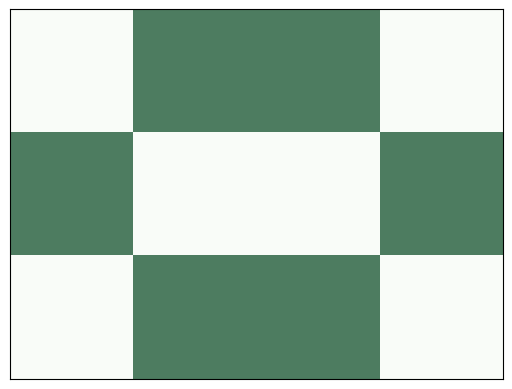
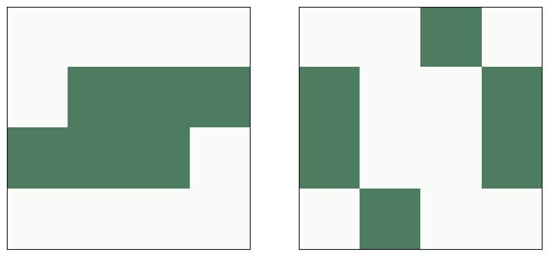
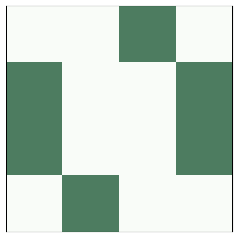
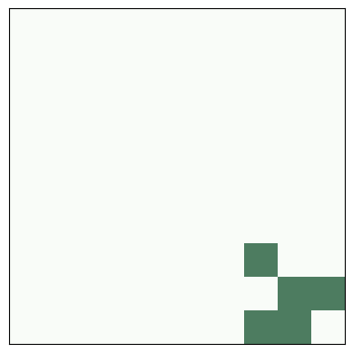
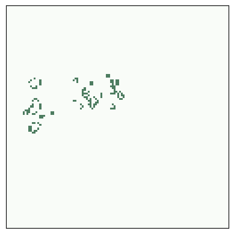
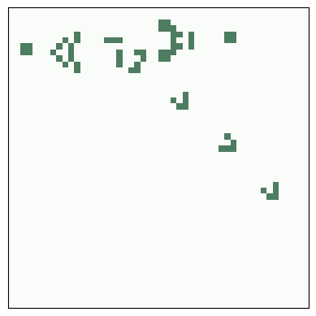
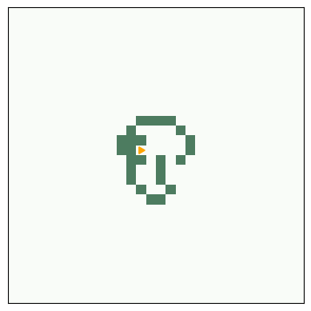

5. Game of Life#
Code examples from Think Complexity, 2nd edition.
Copyright 2016 Allen Downey, MIT License
%load_ext autoreload
%autoreload 2
Show code cell content
from os.path import basename, exists
def download(url):
filename = basename(url)
if not exists(filename):
from urllib.request import urlretrieve
local, _ = urlretrieve(url, filename)
print('Downloaded ' + local)
download('https://github.com/AllenDowney/ThinkComplexity2/raw/master/notebooks/utils.py')
import matplotlib.pyplot as plt
import numpy as np
from utils import savefig
# make a directory for figures
!mkdir -p figs
5.1. Game of Life entities#
download('https://github.com/AllenDowney/ThinkComplexity2/raw/master/notebooks/Cell2D.py')
from scipy.signal import correlate2d
from Cell2D import Cell2D
class Life(Cell2D):
"""Implementation of Conway's Game of Life."""
kernel = np.array([[1, 1, 1],
[1,10, 1],
[1, 1, 1]])
table = np.zeros(20, dtype=np.uint8)
table[[3, 12, 13]] = 1
def step(self):
"""Executes one time step."""
c = correlate2d(self.array, self.kernel, mode='same')
self.array = self.table[c]
The following function creates a Life object and sets the initial condition using strings of 0 and 1 characters.
def make_life(n, m, row, col, *strings):
"""Makes a Life object.
n, m: rows and columns of the Life array
row, col: upper left coordinate of the cells to be added
strings: list of strings of '0' and '1'
"""
life = Life(n, m)
life.add_cells(row, col, *strings)
return life
A beehive is a stable entity, also called a “still life”
# beehive
life = make_life(3, 4, 0, 0, '0110', '1001', '0110')
life.draw()
savefig('figs/chap06-1')
Saving figure to file figs/chap06-1

Here’s what it looks like after one step:
life.step()
life.draw()
A toad is an oscillator with period 2. Here’s are its two configurations:
# toad
plt.figure(figsize=(10, 5))
plt.subplot(1, 2, 1)
life = make_life(4, 4, 1, 0, '0111', '1110')
life.draw()
plt.subplot(1, 2, 2)
life.step()
life.draw()
savefig('figs/chap06-2')
Saving figure to file figs/chap06-2

Here’s what the toad looks like as an animation.
life = make_life(4, 4, 1, 0, '0111', '1110')
anim = life.animate(10, 0.5)

A glider is a spaceship that translates one unit down and to the right with period 4.
# glider
plt.figure(figsize=(12, 4))
glider = ['010', '001', '111']
life = make_life(4, 4, 0, 0, *glider)
for i in range(1, 6):
plt.subplot(1, 5, i)
life.draw()
life.step()
savefig('figs/chap06-3')
Saving figure to file figs/chap06-3
Here’s an animation showing glider movement.
life = make_life(10, 10, 0, 0, '010', '001', '111')
life.animate(frames=28, interval=0.2)

Exercise: If you start GoL from a random configuration, it usually runs chaotically for a while and then settles into stable patterns that include blinkers, blocks, and beehives, ships, boats, and loaves.
For a list of common “natually” occurring patterns, see Achim Flammenkamp, “Most seen natural occurring ash objects in Game of Life”,
Start GoL in a random state and run it until it stabilizes (try 1000 steps). What stable patterns can you identify?
Hint: use np.random.randint.
5.2. Methuselas#
Most initial conditions run for a short time and reach a steady state. But some initial conditional run for a surprisingly long time; they are called Methuselahs.
The r-pentomino starts with only five live cells, but it runs for 1103 steps before stabilizing.
# r pentomino
rpent = ['011', '110', '010']
life = make_life(3, 3, 0, 0, *rpent)
life.draw()
Here are the start and finish configurations.
# r pentomino
plt.figure(figsize=(10, 5))
plt.subplot(1, 2, 1)
life = make_life(120, 120, 50, 45, *rpent)
life.draw()
for i in range(1103):
life.step()
plt.subplot(1, 2, 2)
life.draw()
savefig('figs/chap06-4')
Saving figure to file figs/chap06-4
And here’s the animation that shows the steps.
life = make_life(120, 120, 50, 45, *rpent)
life.animate(frames=1200)

5.3. Conway’s conjecture#
Most initial conditions run for a short time and reach a steady state. Some, like the r-pentomino, run for a long time before they reach steady state. Another example is rabbits, which starts with only nine cells and runs 17331 steps before reaching steady state.
Patterns that take a long time to reach steady state are called Methuselahs
Patterns like these prompted Conway’s conjecture, which asks whether there are any initial conditions where the number of live cells is unbounded.
Gosper’s glider gun was the first entity to be discovered that produces an unbounded number of live cells, which refutes Conway’s conjecture.
glider_gun = [
'000000000000000000000000100000000000',
'000000000000000000000010100000000000',
'000000000000110000001100000000000011',
'000000000001000100001100000000000011',
'110000000010000010001100000000000000',
'110000000010001011000010100000000000',
'000000000010000010000000100000000000',
'000000000001000100000000000000000000',
'000000000000110000000000000000000000'
]
Here’s the initial configuration:
life = make_life(11, 38, 1, 1, *glider_gun)
life.draw()
savefig('figs/chap06-5')
Saving figure to file figs/chap06-5
And here’s what it looks like running:
life = make_life(50, 50, 2, 2, *glider_gun)
life.animate(frames=200)

Another way to refute Conway’s conjecture is a puffer train.
5.4. Implementing Game of Life#
As an example, I’ll start with an array of random cells:
a = np.random.randint(2, size=(10, 10), dtype=np.uint8)
print(a)
[[0 1 0 0 1 1 0 0 1 1]
[1 1 1 1 1 1 0 1 1 0]
[0 0 1 0 0 0 0 1 1 1]
[0 1 1 0 1 1 0 1 1 1]
[0 0 1 1 0 1 0 0 1 0]
[1 0 0 1 0 1 1 1 1 1]
[1 1 1 0 1 1 0 0 1 1]
[0 1 1 1 1 0 0 0 0 1]
[1 0 0 0 1 1 0 1 0 1]
[0 1 1 1 1 0 0 0 0 0]]
The following is a straightforward translation of the GoL rules using for loops and array slicing.
b = np.zeros_like(a)
rows, cols = a.shape
for i in range(1, rows-1):
for j in range(1, cols-1):
state = a[i, j]
neighbors = a[i-1:i+2, j-1:j+2]
k = np.sum(neighbors) - state
if state:
if k==2 or k==3:
b[i, j] = 1
else:
if k == 3:
b[i, j] = 1
print(b)
[[0 0 0 0 0 0 0 0 0 0]
[0 0 0 0 0 1 0 0 0 0]
[0 0 0 0 0 0 0 0 0 0]
[0 1 0 0 1 1 0 0 0 0]
[0 0 0 0 0 0 0 0 0 0]
[0 0 0 0 0 0 0 0 0 0]
[0 0 0 0 0 0 0 0 0 0]
[0 0 0 0 0 0 1 0 0 0]
[0 0 0 0 0 1 0 0 1 0]
[0 0 0 0 0 0 0 0 0 0]]
Here’s a smaller, faster version using cross correlation.
from scipy.signal import correlate2d
kernel = np.array([[1, 1, 1],
[1, 0, 1],
[1, 1, 1]])
c = correlate2d(a, kernel, mode='same')
b = (c==3) | (c==2) & a
b = b.astype(np.uint8)
print(b)
[[1 1 0 0 0 1 1 1 1 1]
[1 0 0 0 0 1 0 0 0 0]
[1 0 0 0 0 0 0 0 0 0]
[0 1 0 0 1 1 0 0 0 0]
[0 0 0 0 0 0 0 0 0 0]
[1 0 0 0 0 0 0 0 0 0]
[1 0 0 0 0 0 0 0 0 0]
[0 0 0 0 0 0 1 0 0 1]
[1 0 0 0 0 1 0 0 1 0]
[0 1 1 1 1 1 0 0 0 0]]
Using a kernel that gives a weight of 10 to the center cell, we can simplify the logic a little.
kernel = np.array([[1, 1, 1],
[1,10, 1],
[1, 1, 1]])
c = correlate2d(a, kernel, mode='same')
b = (c==3) | (c==12) | (c==13)
b = b.astype(np.uint8)
print(b)
[[1 1 0 0 0 1 1 1 1 1]
[1 0 0 0 0 1 0 0 0 0]
[1 0 0 0 0 0 0 0 0 0]
[0 1 0 0 1 1 0 0 0 0]
[0 0 0 0 0 0 0 0 0 0]
[1 0 0 0 0 0 0 0 0 0]
[1 0 0 0 0 0 0 0 0 0]
[0 0 0 0 0 0 1 0 0 1]
[1 0 0 0 0 1 0 0 1 0]
[0 1 1 1 1 1 0 0 0 0]]
More importantly, the second version of the kernel makes it possible to use a look up table to get the next state, which is faster and even more concise.
table = np.zeros(20, dtype=np.uint8)
table[[3, 12, 13]] = 1
c = correlate2d(a, kernel, mode='same')
b = table[c]
print(b)
[[1 1 0 0 0 1 1 1 1 1]
[1 0 0 0 0 1 0 0 0 0]
[1 0 0 0 0 0 0 0 0 0]
[0 1 0 0 1 1 0 0 0 0]
[0 0 0 0 0 0 0 0 0 0]
[1 0 0 0 0 0 0 0 0 0]
[1 0 0 0 0 0 0 0 0 0]
[0 0 0 0 0 0 1 0 0 1]
[1 0 0 0 0 1 0 0 1 0]
[0 1 1 1 1 1 0 0 0 0]]
Exercise: Many Game of Life patterns are available in portable file formats. For one source, see http://www.conwaylife.com/wiki/Main_Page.
Write a function to parse one of these formats and initialize the array.
5.5. Highlife#
One variation of GoL, called “Highlife”, has the same rules as GoL, plus one additional rule: a dead cell with 6 neighbors comes to life.
You can try out different rules by inheriting from Life and changing the lookup table.
Exercise: Modify the table below to add the new rule.
# Starter code
class MyLife(Life):
"""Implementation of Life."""
table = np.zeros(20, dtype=np.uint8)
table[[3, 12, 13]] = 1
One of the more interesting patterns in Highlife is the replicator, which has the following initial configuration.
replicator = [
'00111',
'01001',
'10001',
'10010',
'11100'
]
Make a MyLife object with n=100 and use add_cells to put a replicator near the middle.
Make an animation with about 200 frames and see how it behaves.
Exercise:
If you generalize the Turing machine to two dimensions, or add a read-write head to a 2-D CA, the result is a cellular automaton called a Turmite. It is named after a termite because of the way the read-write head moves, but spelled wrong as an homage to Alan Turing.
The most famous Turmite is Langton’s Ant, discovered by Chris Langton in 1986. See http://en.wikipedia.org/wiki/Langton_ant.
The ant is a read-write head with four states, which you can think of as facing north, south, east or west. The cells have two states, black and white.
The rules are simple. During each time step, the ant checks the color of the cell it is on. If black, the ant turns to the right, changes the cell to white, and moves forward one space. If the cell is white, the ant turns left, changes the cell to black, and moves forward.
Given a simple world, a simple set of rules, and only one moving part, you might expect to see simple behavior—but you should know better by now. Starting with all white cells, Langton’s ant moves in a seemingly random pattern for more than 10 000 steps before it enters a cycle with a period of 104 steps. After each cycle, the ant is translated diagonally, so it leaves a trail called the “highway”.
Write an implementation of Langton’s Ant.
n = 5
turmite = Turmite(n)
turmite.draw()
turmite.step()
turmite.draw()
# And a larger version with 1000 steps
turmite = Turmite(n=30)
turmite.animate(frames=1000)
